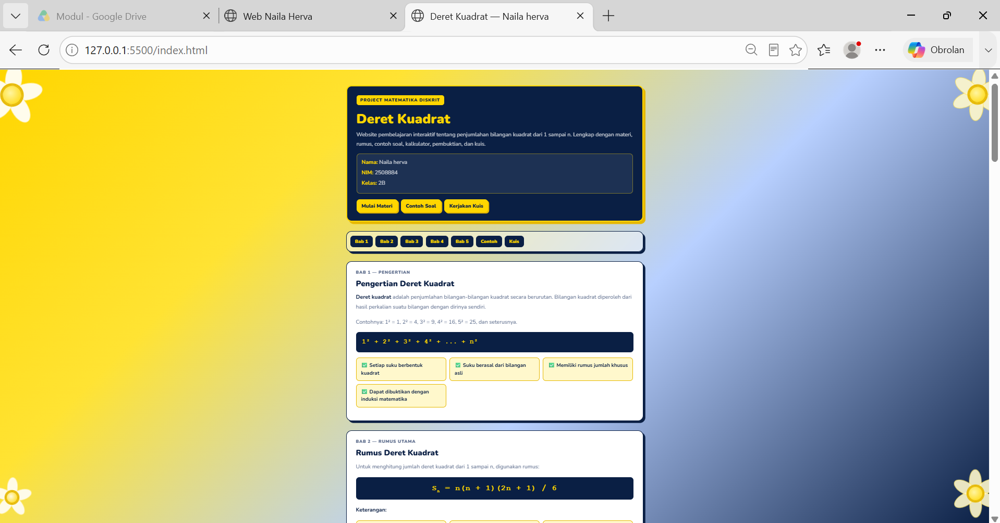
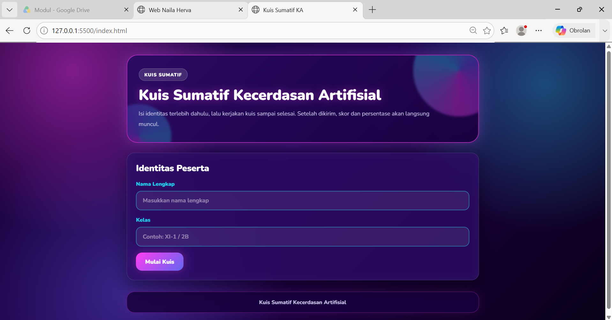

Berikut adalah beberapa project sederhana yang pernah atau yang sedang saya kerjakan.

Website sederhana ini dibuat untuk membantu pengguna mempelajari materi
tentang Deret Kuadrat.
Di dalam website terdapat beberapa fitur,
yaitu materi pembelajaran, contoh soal, kuis, serta fitur untuk mengajukan
pertanyaan mengenai materi Deret Kuadrat.
Pengguna dapat mengetikkan
pertanyaan pada fitur tersebut dan akan mendapatkan jawaban yang sesuai
dengan pertanyaan yang diajukan.
Repository:Deret Kuadrat

Website ini digunakan sebagai evaluasi sumatif untuk mengukur pemahaman peserta didik terhadap materi Artificial Intelligence (AI) yang telah dipelajari.
Repository:Kuis Sumatif

Website ini merupakan halaman khusus yang digunakan oleh guru atau admin
untuk memantau dan melihat hasil Kuis Sumatif Artificial Intelligence yang
telah dikerjakan oleh peserta didik.
Melalui website ini, guru dapat
melihat nilai dan hasil pengerjaan siswa sehingga dapat mengetahui tingkat
pemahaman peserta didik terhadap materi yang telah diberikan.
Repository:Hasil Kuis Sumatif
| Ringkasan Portofolio Project | |||
|---|---|---|---|
| No. | Nama Project | Detail Project | |
| Teknologi | Status | ||
| 1 | Website Deret Kuadrat | HTML
CSS JavaScript Firebase Github Vercel |
Selesai |
| 2 | Website Kuis Sumatif | ||
| 3 | Website Admin Hasil Kuis | ||